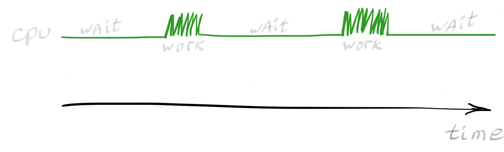
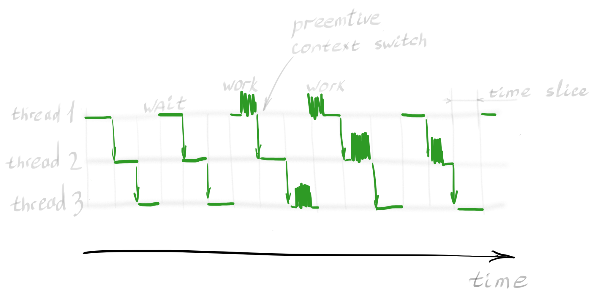
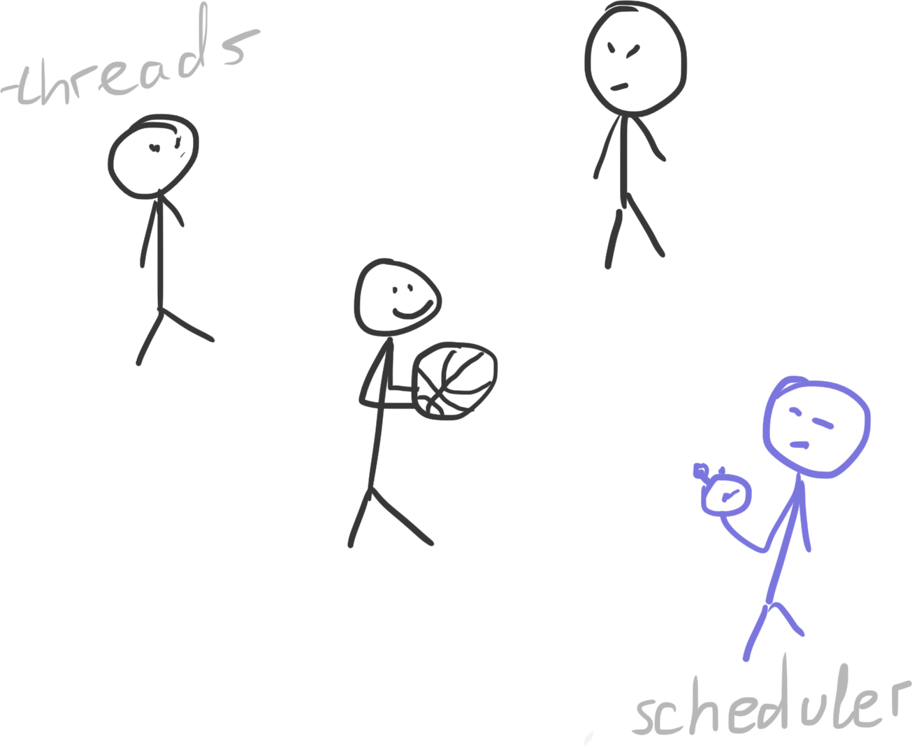
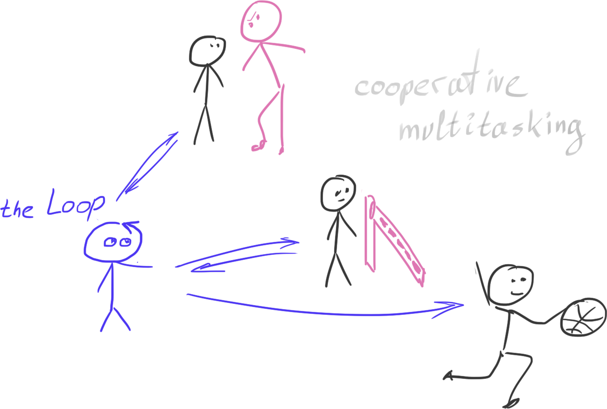
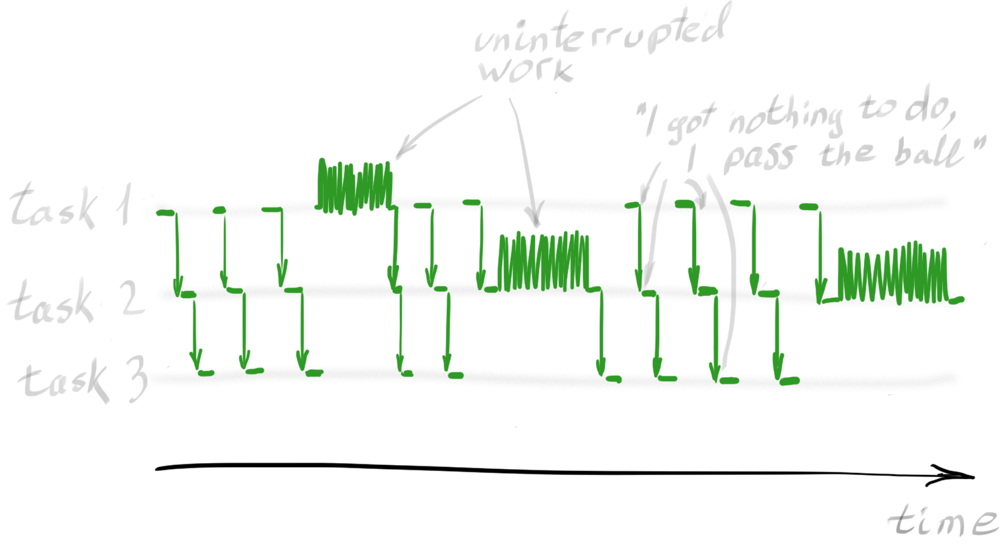

Imagine a cook in the kitchen, cooking three dishes. A steak, some boiled eggs and a salad. A cook with one-track mind could do only one dish at a time, defrosting meat, slicing it, putting it in the oven, waiting for it to be ready and only then proceeding to take eggs from the fridge, boil them, peels them, finally gets to do the salad.
That is obviously not the way cooks behave in a kitchen, because that would be massively ineffective.
While a cook can only do one thing at a time, be it slicing or peeling, there is an eternity of time to be saved by no sleeping on a job while waiting for something. Do the salad while the meat is in the oven, right?
In the software world, the cook is the CPU and tasks it is faced with usually have long waiting periods in them too. So that CPU is idling most of the time, only ocasionally doing some work.
Actually, the retrieval of an external resource is a classic example associated with this kind of task. Let's take a closer look at this situation. Imagine we need to fetch 100 URLs from a remote server, and we do so sequentially:
This is not what we usually want it to do.
One way to give CPU more work is to spin additional threads so that our waiting periods can be combined. We will trigger hundred requests and then wait for all of them to finish, constantly switching between each.
Python provides a convenient API for carrying out this task. With several threads, each executing intermittently within its own time slice, our CPU utilization would look like this:
We can see several interesting details here.
The thread execution is intermittent rather than parallel. Each thread is being executed for a fixed amount of time, no matter whether it is doing real work or just waiting for an action to complete.
To do so, the switches between running tasks must not occur at fixed time slices, scheduled by an over-watching system (so-called preemptive multitasking), but exactly at the time the task has been performed to its fullest extent and starts waiting for the next action. That would be the perfect moment for this task to allow another task to be passed to the CPU. Such behavior is called “cooperative multitasking.”
A co-routine is a function that can suspend execution at some point and resume it later. By implementing our downloading application with co-routines, we will get a performance graph like this:
This method utilizes the CPU to near 100% capability, and thus greatly improves the application’s performance.